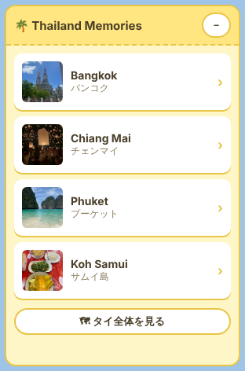
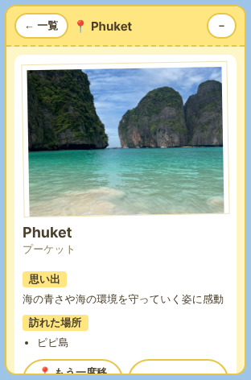

はじめに
古橋研究室オンラインハッカソン（ソロ）で、FOSS4G Hiroshima / SotM Asia OSAKA で紹介された技術の中から、 自分にとって初めて使う技術を1つ選んでアウトプットを作りました。
選んだ技術は Re:Earth Visualizer です。 要確認：どちらのイベント・どの発表で紹介されたかを書く
AI はすべて Claude Code を使い、成果物は furuhashilab の GitHub で公開しています（ライセンス：CC BY 4.0）。
Re:Earth Visualizer とは
Re:Earth（リアース）は、株式会社ユーカリヤ（Eukarya）が開発しているオープンソースの WebGIS （Web 上で地図や地理空間データを扱うしくみ）です。東京大学 渡邉英徳研究室と共同で開発され、2021年に公開されました。 国土交通省の 3D 都市モデル「Project PLATEAU」の可視化環境「PLATEAU VIEW」の基盤にも使われています。 地図を作って見せる「Re:Earth Visualizer」、データを管理・配信する「Re:Earth CMS」、 プラグインを公開・共有する「Re:Earth Marketplace」があります。
Re:Earth Visualizer は、ブラウザ上の 3D の地球儀に地図データを重ねて表示し、そのまま Web に公開できるツールです。 描画エンジンは CesiumJS で、ライセンスは Apache-2.0。GIS データの表示、図形の描画、条件による見た目の切り替え、 ストーリー機能、公開・埋め込みのほか、JavaScript で機能を追加できるプラグインがあります。 プラグインを使うと、地図の上に自分で作ったボタンやパネルを置いたり、地図のカメラを動かしたりできます。
今回の Thailand Memories は、この「プラグイン」機能を使って作ったウィジェットです。 （参考：公式サイト・GitHub）
作ったもの：Thailand Memories
タイ旅行の思い出を、写真と地図で振り返るウィジェット（地図の上に出る小さなパネル）です。
- 4つのスポット（バンコク・チェンマイ・プーケット・サムイ島）を一覧表示
- スポットを押すと、地図がその場所へ飛んでいき（
reearth.camera.flyTo）、写真付きの思い出カードが出る - パステルイエローの旅行アルバム風デザイン。スマホでは小さく表示され、たたむこともできる
- 写真と文章はプログラムの先頭1か所で管理していて、スポットも簡単に追加できる


作り方の流れ
- Claude Code に「作りたいもの・条件・作る順番」を日本語で依頼
- Claude Code が Re:Earth の公式リポジトリのソースコードで API を確認しながら、
reearth.ymlとthailand-widget.jsを作成 - Re:Earth のプラグインプレイグラウンドにコードを貼り付けて試す
- ZIP にして自分のプロジェクトにインストールし、デスクトップとモバイルの両方で動作確認
- 自分の写真と思い出の文章を入れて、プロジェクトを公開
- GitHub Pages で紹介ページを公開
つまずいたポイント
① ウィジェットが表示されない
表示位置を zone: inner にしていたのが原因でした。公式のサンプルと同じ zone: outer にしたら表示されました。
② プレイグラウンドでは地図が真っ青
プレイグラウンドには背景の地図が無く、カメラが動いても青い球が大きくなるだけでした。本物のプロジェクトで試したら、ちゃんとバンコクに飛んでいきました。
③ スマホ表示にウィジェットが出ない
Re:Earth ではウィジェットをデスクトップ用とモバイル用で別々に追加する必要がありました。スマホでは大きすぎたので、画面に合わせて小さくなるように改良しました。
④ 写真の URL が 404
GitHub Pages を有効にしていなかったことと、フォルダ名・ファイル名の大文字小文字（Photo/Bangkok.jpg）が URL と違っていたことが原因でした。
⑤ Claude Code から GitHub に push できない
push すると 403 エラーになりました。調べたところ、認証や書き込み権限、ブランチ保護の問題ではなく、 Claude GitHub App が furuhashilab 組織にインストールされていないことが唯一の原因でした。 そこで、自分のパソコンに Claude Code をインストールし、PowerShell から動かして push しました。README の衝突の解決も Claude Code に任せ、プルリクエストで main に取り込みました。
学んだこと
- 地図ツールでも、プラグインを使えば HTML と JavaScript だけで自分の機能を足せる
- うまくいかないときは「公式のサンプルと同じ形にしてみる」のが近道
- 「仮の環境でうまくいった」と「本物で動いた」は別物。必ず本物で確かめる
- URL は大文字小文字まで正確に。GitHub Pages は設定で有効にしないと公開されない
- AI と一緒に作るときも、組織の権限や設定は人間が整える必要がある
要確認：自分の言葉で感想を1〜2行追加する
グラレコ

（
assets/graphic-recording.png を追加してください）